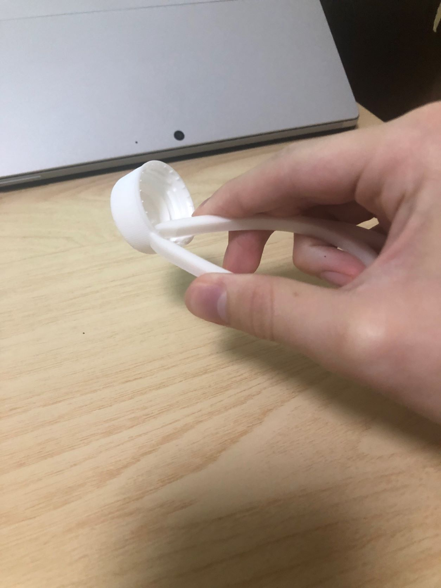
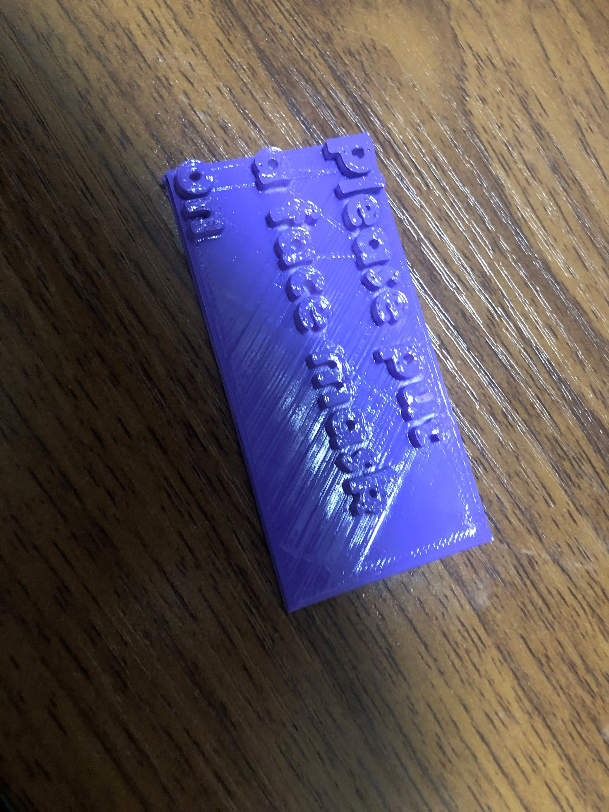
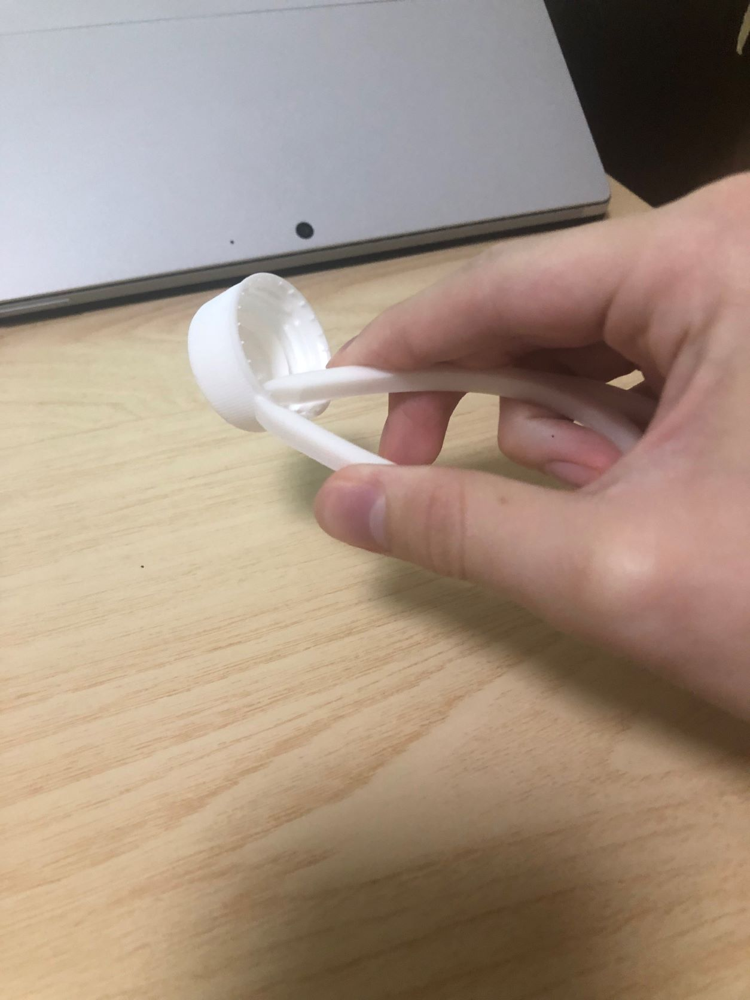
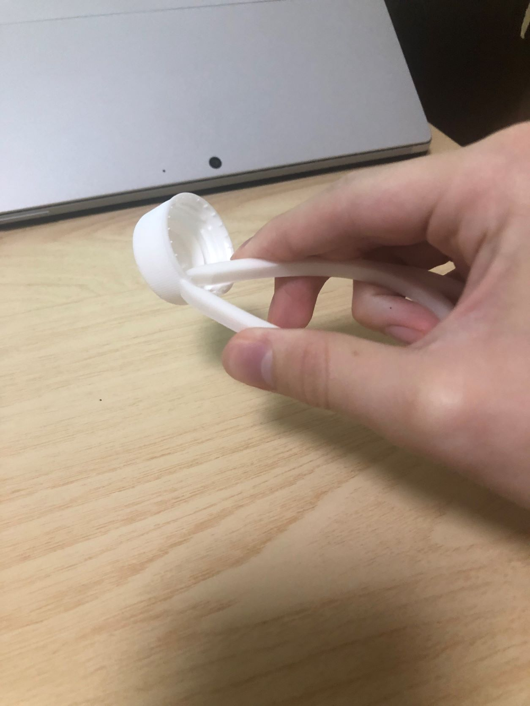
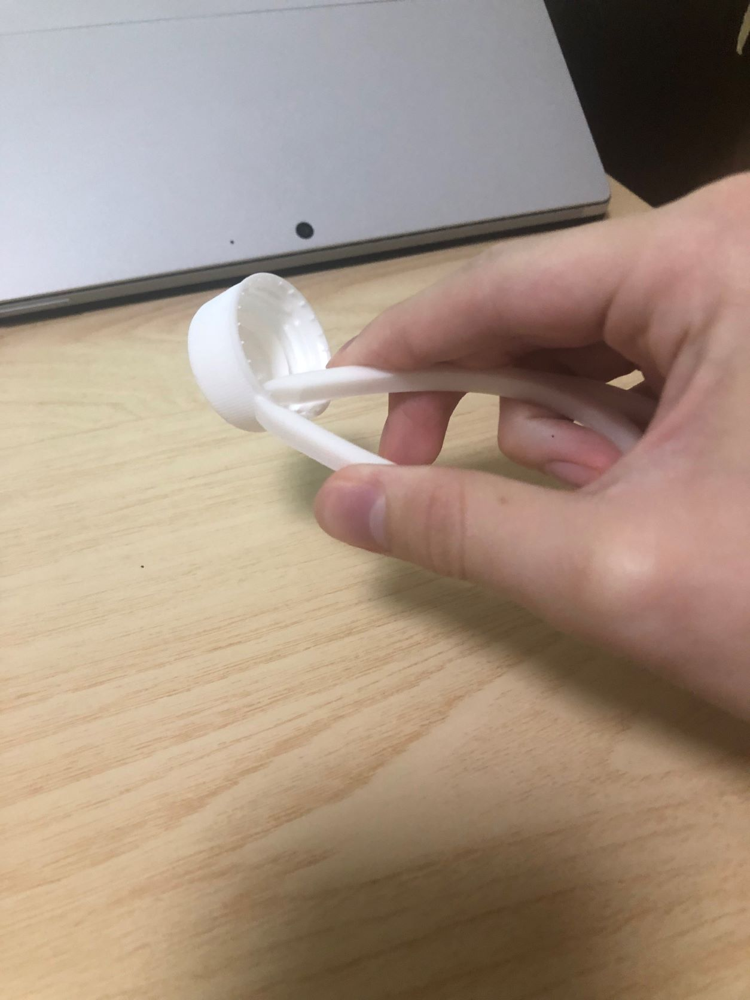
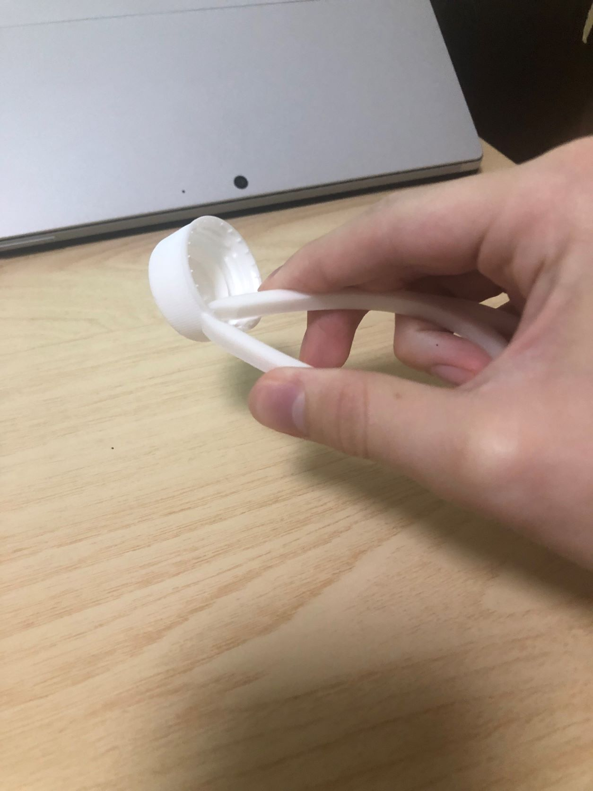

デジタルファブリケーション 第3回Assignment
design for others1
202101761 岡本翔馬
ピックアップ対象
マスクをしない外国人
構想段階のスケッチ

プロトタイピング

5.作品の説明
「Please put a face mask on」（訳：マスクをしてください」と書いている。
小さい穴をあけてキーホルダーとして活用できる
真っ白では目立たない・見ずらい・ださいのでスプレーで紫色にしました。
 
  
